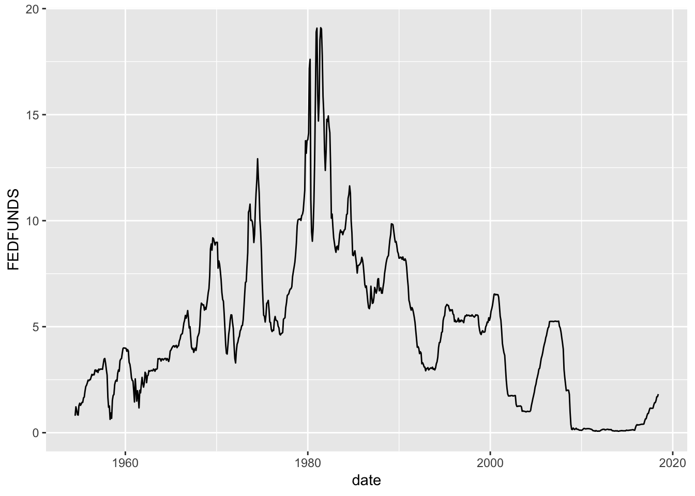

fredr
fredr seamlessly interacts with the RESTful API for Federal Reserve Economic Data (FRED), provided by the Federal Reserve Bank of St. Louis. Essentially a simple wrapper of httr, dplyr, and the FRED API itself, fredr is designed with simplicity and flexibility in mind. In addition a generic query function fredr to return any query as a data.frame, the package also provides convenience functions fredr_search and fredr_series to simplify the process to finding and importing FRED data series as R objects. As nearly all optional parameters supplied to these functions are relayed verbatim to the API, the user is strongly encouraged to read the full FRED API documentation to leverage the full power of the FRED API and fredr. The convenience function fredr_docs quickly brings up the web documentation. See the section below for usage examples.
Installation
Usage
Setting the FRED API key
Load fredr and set FRED API key in working directory. You must first obtain a FRED API key. It is also recommended to reveiw the FRED API Terms of Use.
Search for FRED data objects
Search for FRED series
fredr_search(search_text = "unemployment")
#> # A tibble: 1,000 x 16
#> id realtime_start realtime_end title observation_sta…
#> <chr> <chr> <chr> <chr> <chr>
#> 1 UNRATE 2018-02-27 2018-02-27 Civilian Unemploy… 1948-01-01
#> 2 UNRATE… 2018-02-27 2018-02-27 Civilian Unemploy… 1948-01-01
#> 3 NROU 2018-02-27 2018-02-27 Natural Rate of U… 1949-01-01
#> 4 UNEMPL… 2018-02-27 2018-02-27 Unemployment Level 1948-01-01
#> 5 M0892A… 2018-02-27 2018-02-27 Unemployment Rate… 1929-04-01
#> 6 Q0892B… 2018-02-27 2018-02-27 Unemployment Rate… 1940-04-01
#> 7 M0892B… 2018-02-27 2018-02-27 Unemployment Rate… 1940-01-01
#> 8 M0892C… 2018-02-27 2018-02-27 Unemployment Rate… 1947-01-01
#> 9 NROUST 2018-02-27 2018-02-27 Natural Rate of U… 1949-01-01
#> 10 U6RATE 2018-02-27 2018-02-27 Total unemployed,… 1994-01-01
#> # ... with 990 more rows, and 11 more variables: observation_end <chr>,
#> # frequency <chr>, frequency_short <chr>, units <chr>,
#> # units_short <chr>, seasonal_adjustment <chr>,
#> # seasonal_adjustment_short <chr>, last_updated <chr>, popularity <int>,
#> # group_popularity <int>, notes <chr>Retrieve a FRED series
Get a FRED series. Returns an xts object.
library(dplyr)
library(xts)
fredr_series(series_id = "UNRATE",
observation_start = "1990-01-01") %>%
window(., start = "1990-01-01", end = "1991-01-01")
#> UNRATE
#> 1990-01-01 5.4
#> 1990-02-01 5.3
#> 1990-03-01 5.2
#> 1990-04-01 5.4
#> 1990-05-01 5.4
#> 1990-06-01 5.2
#> 1990-07-01 5.5
#> 1990-08-01 5.7
#> 1990-09-01 5.9
#> 1990-10-01 5.9
#> 1990-11-01 6.2
#> 1990-12-01 6.3
#> 1991-01-01 6.4Leverage the native features of the FRED API:
fredr_series(series_id = "UNRATE",
observation_start = "1990-01-01",
frequency = "q",
units = "chg") %>%
window(., start = "1990-01-01", end = "1991-01-01")
#> UNRATE
#> 1990-01-01 -0.1
#> 1990-04-01 0.0
#> 1990-07-01 0.4
#> 1990-10-01 0.4
#> 1991-01-01 0.5fredr_series(series_id = "GNPCA",
units = "log") %>%
diff() %>%
na.omit() %>%
StructTS() %>%
residuals() %>%
acf(., main = "ACF for First Differenced real US GNP, log")
fredr_search(search_text = "federal funds",
order_by = "popularity",
limit = 1)$id %>%
fredr_series(series_id = .) %>%
plot(., main = "Federal Funds Rate")
Access API documentation
Quickly access the FRED API web documentation for any endpoint
You may also use the params option for fredr_docs to go straight to the endpoint’s Parameters section.
A list of possible endpoints is contained in the data frame fredr_endpoints
fredr_endpoints
#> # A tibble: 31 x 3
#> endpoint type note
#> <chr> <chr> <chr>
#> 1 fred/category Categories Get a category
#> 2 fred/category/children Categories Get the child categories for a s…
#> 3 fred/category/related Categories Get the related categories for a…
#> 4 fred/category/series Categories Get the series in a category
#> 5 fred/category/tags Categories Get the tags for a category
#> 6 fred/category/related_tags Categories Get the related tags for a categ…
#> 7 fred/releases Releases Get all releases of economic data
#> 8 fred/releases/dates Releases Get release dates for all releas…
#> 9 fred/release Releases Get a release of economic data
#> 10 fred/release/dates Releases Get release dates for a release …
#> # ... with 21 more rowsGeneral queries
You can also use the backbone function fredr to run more general queries against any FRED API endpoint (e.g. Categories, Series, Sources, Releases, Tags). This is also useful to return any arbitrary information as a data.frame.
fredr(endpoint = "tags/series", tag_names = "population;south africa")
#> # A tibble: 59 x 16
#> id realtime_start realtime_end title observation_sta…
#> <chr> <chr> <chr> <chr> <chr>
#> 1 LFWA24T… 2018-02-27 2018-02-27 Working Age Popu… 2008-01-01
#> 2 LFWA24T… 2018-02-27 2018-02-27 Working Age Popu… 2008-01-01
#> 3 LFWA24T… 2018-02-27 2018-02-27 Working Age Popu… 2008-01-01
#> 4 LFWA24T… 2018-02-27 2018-02-27 Working Age Popu… 2008-01-01
#> 5 LFWA25T… 2018-02-27 2018-02-27 Working Age Popu… 2008-01-01
#> 6 LFWA25T… 2018-02-27 2018-02-27 Working Age Popu… 2008-01-01
#> 7 LFWA25T… 2018-02-27 2018-02-27 Working Age Popu… 2008-01-01
#> 8 LFWA25T… 2018-02-27 2018-02-27 Working Age Popu… 2008-01-01
#> 9 LFWA55T… 2018-02-27 2018-02-27 Working Age Popu… 2008-01-01
#> 10 LFWA55T… 2018-02-27 2018-02-27 Working Age Popu… 2008-01-01
#> # ... with 49 more rows, and 11 more variables: observation_end <chr>,
#> # frequency <chr>, frequency_short <chr>, units <chr>,
#> # units_short <chr>, seasonal_adjustment <chr>,
#> # seasonal_adjustment_short <chr>, last_updated <chr>, popularity <int>,
#> # group_popularity <int>, notes <chr>Set to_frame to FALSE to return a generic response object from a httr::GET request that can be further parsed with httr::content
library(httr)
resp <- fredr::fredr(endpoint = "series/observations", series_id = "UNRATE", to_frame = FALSE)
resp
#> Response [https://api.stlouisfed.org/fred/series/observations?series_id=UNRATE&api_key=d3ef3490ef7270cf903d07141e9e7db7&file_type=json]
#> Date: 2018-02-28 04:10
#> Status: 200
#> Content-Type: application/json; charset=UTF-8
#> Size: 79.3 kBSee Also
The primary goal in creating fredr was educational. I also suggest you check out several other R packages designed for the FRED API: